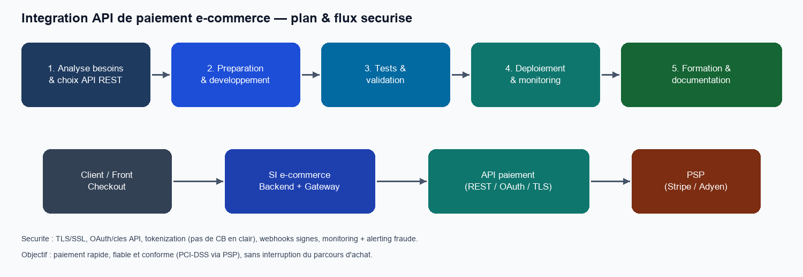

BADET Mael
Livecampus
MINI CAS 5
Membres du groupe
BADET Mael

LEBLOND Tristan

LOURENCO Quentin

MASIA Antoine
Une entreprise de e-commerce souhaite intégrer une plateforme de paiement en ligne via une API. Cette API permettra aux clients de payer directement sur le site de l’entreprise, et il est crucial de garantir la sécurité des transactions tout en assurant une intégration fluide et fiable. L’objectif est d’offrir une expérience utilisateur optimisée, avec un processus de paiement rapide et sécurisé.
En tant que responsable technique, proposer un plan détaillé pour intégrer la plateforme de paiement : étapes clés, technologies à utiliser et mesures de sécurité pour protéger les données sensibles des clients.
Un document PDF d’aspect professionnel comprenant :

L’intégration s’appuie sur les leviers du chapitre 5 : choix d’une API REST, sécurisation des échanges (TLS, OAuth), tests / validation, puis surveillance et maintenance. Nous évitons de stocker les numéros de carte : le PSP (Payment Service Provider) gère la tokenisation et la conformité PCI-DSS.
| Besoin | Exigence cible |
|---|---|
| Volume de transactions | Pic Black Friday / soldes : montée en charge sans timeout checkout |
| Méthodes de paiement | CB (Visa/Mastercard), Apple Pay / Google Pay, éventuellement SEPA |
| International | Multi-devises, 3-D Secure (SCA / DSP2) pour l’Europe |
| UX | Paiement rapide, peu d’étapes, messages d’erreur clairs |
| Fiabilité | Webhooks de confirmation, idempotence, reprise sur incident |
| Conformité | RGPD + non-stockage des données CB (réduction de portée PCI) |
Conformément au cours, pour une intégration web moderne nous privilégions une API REST (HTTP/JSON) plutôt que SOAP :
SOAP resterait envisageable uniquement si un partenaire legacy l’imposait ; ce n’est pas le cas ici.
Exemple de PSP : Stripe, Adyen ou équivalent européen selon contraintes métier / coûts.
Avant de coder, étudier :
POST /payment_intents, capture, refund, etc.) ;payment_succeeded, payment_failed) ;paid / failed) et déclenche confirmation / livraison.| Phase | Durée | Contenu |
|---|---|---|
| Cadrage & choix PSP | 1 semaine | Besoins, contrat, accès sandbox |
| Conception | 1 semaine | Séquences, modèle de données commande/paiement, menaces |
| Coffre-fort credentials web | 3–5 jours | Provisionner le vault, espaces sandbox/prod, droits d’accès |
| Développement | 2–3 semaines | Backend API, checkout, webhooks, idempotence |
| Tests | 1–2 semaines | Intégration, charge, sécurité, parcours E2E |
| Mise en production | 1 semaine | Basculer progressivement, monitoring |
| Hypercare | 2 semaines | Support renforcé, correctifs |
Les secrets de l’intégration (clé secrète API PSP, secrets de signature webhook, certificats, jetons OAuth) ne doivent jamais être stockés en clair dans le code, le dépôt Git ou les fichiers .env versionnés.
Nous mettons en place un coffre-fort de credentials web (ex. HashiCorp Vault, AWS Secrets Manager, Azure Key Vault, ou le secret store du cloud / de l’hébergeur) avec :
Cette étape est planifiée juste après la conception, pour que le développement consomme déjà les secrets via le coffre-fort et non via des fichiers locaux.
| Mesure | Mise en œuvre |
|---|---|
| Chiffrement transit | TLS 1.2+ / certificats SSL sur tous les échanges |
| Authentification API | Clés secrètes côté serveur, OAuth si proposé ; jamais de clé secrète dans le front |
| Coffre-fort & rotation | Secrets dans un vault ; rotation périodique et après incident |
| Tokenization | Le PSP tokenize la carte ; le SI ne stocke que des références / IDs de paiement |
| Webhooks | Vérification de signature ; rejet si invalide |
| Idempotence | Clés d’idempotence pour éviter les doubles débits |
| Moindre privilège | Comptes / rôles séparés (dev, prod, support) |
| Journalisation | Logs sans données sensibles (pas de PAN, pas de CVV) |
| Audits | Revue de sécurité + tests de pénétration avant go-live |
| RGPD | Minimisation, durées de conservation, droits d’accès sur les données de transaction non CB |
Le stockage dans un coffre-fort ne suffit pas : les secrets doivent être rotatés.
| Secret | Fréquence de rotation | Déclencheur immédiat |
|---|---|---|
| Clé secrète API PSP (prod) | Tous les 90 jours | Fuite suspectée, départ d’un admin, incident |
| Secret de signature webhook | Tous les 90 jours | Compromise, changement de PSP / endpoint |
| Jetons OAuth / refresh | Selon TTL du fournisseur | Révocation, anomalie d’accès |
| Certificats TLS | Avant expiration (alerte J-30) | Compromission du certificat |
Processus de rotation :
Ainsi, même en cas de fuite limitée dans le temps, la fenêtre d’exposition reste courte. La rotation s’intègre aussi à la maintenance continue prévue après le go-live.
Ces mesures reprennent les bonnes pratiques du cours : sécuriser les échanges, surveiller les vulnérabilités, et valider les processus critiques avant production.
| Type de test | Objectif |
|---|---|
| Sandbox fonctionnel | Parcours succès / échec / 3DS / remboursement |
| Contrats d’API | Compatibilité des payloads et codes retour |
| Intégration E2E | Panier → paiement → confirmation commande |
| Charge | Tenir le volume de transactions attendu |
| Sécurité | Signature webhooks, absence de fuite de secrets, headers sécurisés |
| Reprise sur incident | Comportement si PSP timeout / webhook manquant |
Critères de go-live : taux d’erreur sous seuil, parcours critiques validés, runbook incident prêt, rollback possible (feature flag checkout).
Exemples de stack de monitoring :
| Besoin | Outils (exemples) | Usage pour le paiement |
|---|---|---|
| Métriques & dashboards | Prometheus + Grafana | Latence API PSP, taux de succès / échec, saturation CPU/RAM, files webhooks |
| Logs centralisés | ELK (Elasticsearch, Logstash/Fluentd, Kibana) ou OpenSearch | Corréler erreurs checkout, codes retour PSP, traces sans données CB |
| Tracing distribué | Jaeger / OpenTelemetry | Suivre une transaction panier → backend → PSP → webhook |
| Uptime / synthétique | Uptime Kuma, Blackbox Exporter, Pingdom | Sonde périodique du parcours checkout et des endpoints critiques |
| APM applicatif | Datadog, New Relic, Sentry | Exceptions backend, performances des appels API |
| Alerting | Alertmanager (Grafana), PagerDuty, Slack | Seuil d’erreurs 5xx, chute du taux d’autorisation, webhooks en retard |
En pratique, un socle Prometheus/Grafana (métriques) + ELK (logs) + alertes Slack/PagerDuty couvre déjà l’essentiel pour piloter l’intégration en production.
| Étape (guide du mini-cas) | Notre réponse |
|---|---|
| Analyse des besoins & choix API | REST + PSP tokenisé, multi-moyens, international / 3DS |
| Planification & préparation | Doc API, architecture, calendrier en phases |
| Sécurité | TLS, OAuth/clés serveur, tokenization, webhooks signés, audits |
| Déploiement & suivi | Canary, monitoring, alerting, maintenance |
| Formation & documentation | Support + ops formés, doc technique complète |
En conclusion, l’intégration réussie d’une API de paiement repose moins sur « brancher un endpoint » que sur une planification complète : besoins clairs, technologie adaptée (REST), sécurité native (ne jamais traiter la CB en clair), tests robustes, mise en production progressive et pilotage continu. C’est exactement l’approche du chapitre 5 pour intégrer un tiers dans le SI de façon sécurisée, évolutive et maintenable.